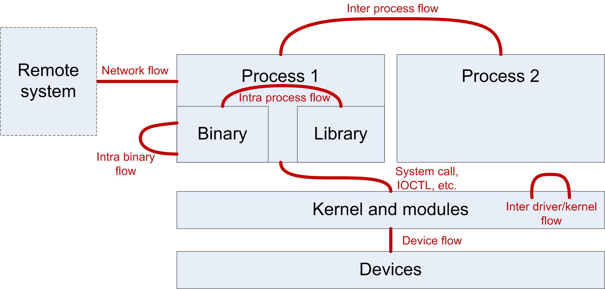

Importing Data
Contents
Importing Data#
Communication protocols can be found is every parts of a system, as shown on the following picture:
{kind=link}
Netzob can handle multiple kinds of input data. Hence, you can analyze network traffic, IPC communications, files structures, etc.
Import can either be done by using a dedicated captor or by providing already captured messages in a specific format.
Current accepted formats are:
PCAP files
Structured files
Netzob XML files (used by Netzob for its internal representation of messages)
Current supported captors are:
Network captor, based on the XXX library
Intra Process communication captor (API calls), based on API hooking
Inter Process Communication captor (pipes, shared memory and local sockets), based on system call hooking
Imported messages are manipulated by Netzob through specific Python objects which contains metadata that describes contextual parameters (timestamp or even IP source/destination for example). All the Python object that describe messages derived from an abstract object : AbstractMessage.
The next part of this section details the composition of each message object.
AbstractMessage#
All the messages inherits from this definition and therefore has the following parameters :
a unique ID
a data field represented with an array of hex
NetworkMessage#
A network message is defined with the following parameters :
a timestamp
the ip source
the ip target
the protocol (TCP/UDP/ICMP…)
the layer 4 source port
the layer 4 target port
Definition of a NetworkMessage :
FileMessage#
A file message is defined with the following parameters :
a filename
the line number in the file
the creation date of the file
the last modification date of the file
the owner of the file
the size of the file